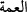

“Sizin” ve sizin durumunuzda olan müminler “için de, gerek kendi evlerinizden,” “__WORD__in asıl anlamı kişinin geceleyin kaldığı yerdir. Sonra gece dikkate alınmaksızın
kalınan her yer için kullanılır olmuştur. “__WORD__ mesken, “__WORD__ ise şiir için daha
özeldir. Âyetin mânâsı, bizzat kendinizin kaldığı, içinde yiyecekleriniz ve diğer
mallarınızın bulunduğu evlerde yemenizde güçlük yoktur, şeklinde değildir. Çünkü
insanlar için kendi evlerinde, kendi yemeklerinden yemekte bir güçlük yoktur.
Dolayısıyla mânâ; eşler, çocuklar, köleler ve benzerleri gibi aranızdaki zaruri ve yoğun
birliktelikten dolayı “kendiniz” hükmünde olan kişilerin evlerinden, şeklinde olmalıdır.
Çünkü hanımın evi kocasının evi gibi, aynı şekilde çocukların evi de baba ve
annelerinin evi gibidir. Bu sebeple koca hanımının evini, baba da çocuğunun evini
kendine nisbet ederek “evim” der. Bir hadiste: “İnsanın yediği en temiz yiyecek, kendi
kazandığından olandır. Çocuğu da, kazandığı şeylerden biridir.”[185] buyrulmuştur.
Diğer bir hadiste ise “Sen de malın da babana âiddir.”[186] ifâdesi kullanılmıştır.
Babanın çocuğu ile ilgili durumu böyle olunca, sen bunu efendilerin kölelerle ilgili
durumuna kıyas et.
“Gerekse babalarınızın evlerinden,” “__WORD__ baba, yâni nutfesinden diğer bir canlı
doğan canlı demektir. “Annelerinizin evlerinden,” “__WORD__, babanın mukabili, yâni vâlide
demektir. “Erkek kardeşlerinizin evlerinden,” “__WORD__ (kardeş)”, doğumda hem anne hem
babandan veya ikisinden birinden yahut süt emme bakımından bir başkasıyla ortaklığı
bulunan erkek demektir. Bu kelime kabile, din, sanat, iş, sevgi vb. ilişkiler bakımından
bir başkasıyla ortaklığı bulunan herkes için müsteâr olarak kullanılır. “Kız
kardeşlerinizin evlerinden,” “__WORD__ (kız kardeş), “__WORD__ kelimesinin müennesidir.
“Amcalarınızın evlerinden, halalarınızın evlerinden,” “__WORD__ (amca)” babanın erkek
kardeşi, “__WORD__ (hala)” ise babanın kız kardeşi demektir. Bunun aslı, şümûl anlamına
gelen “umûm” kelimesidir. Çok olup bütün bölgelere dağılmaları sebebiyle insanlara
“âmme”; yaygın oluşu veya başın her tarafını sarması sebebiyle de sarığa “__WORD__
denilir. “Dayılarınızın evlerinden, teyzelerinizin evlerinden,” “__WORD__ (dayı), annenin
erkek kardeşi, “__WORD__ (teyze)” ise annenin kız kardeşi demektir. “Veya anahtarlarını
uhdenizde bulundurduğunuz yerlerden,” “__WORD__ kelimesi “__WORD__ kelimesinin, “__WORD__
kelimesi “__WORD__ kelimesinin çoğuludur. İkisi de açma âleti/anahtar demektir. “__WORD__ ise
kapalılığı ve karışıklığı giderme demektir. Yâni sâhiplerinin izniyle tasarruf hakkına
sâhip olduğunuz evlerden... demektir. Meselâ sıhhatli ve güçlü biri savaşa gider, evini
zayıf ve güçsüz birine bırakır, anahtarını teslim eder ve bu izni gönüllü mü yoksa
gönülsüz mü verdi diye bir endişe duymaksızın orada bulunan şeylerden yemesi için
kendisine izin verir.
Bazıları demişlerdir ki bu, vekâleten veya koruma amacıyla elleri ve tasarrufları
altında bulunan arâzî veya hayvanlardır. Bu takdirde “anahtarlara sâhip olmak”, malın